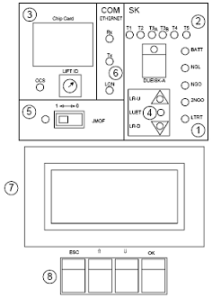

EUROLIFT

| Etat tension d'alimentetion et LED du déclencheur de porte | |
| Circuit de sécurité | |
| Carte à puce,ID de l'ascenseur | |
| LED de direction et du niveau de l'étage | |
| Interrupteur du mode de course de montage | |
| Information sur l'état de la communication du groupe et du bus LON | |
| SMLCD à 4 lignes(affichage à cristaux liquides de l'unité de service) | |
| Touches de commandes SMLCD |
| Commutateur(à coulisse) de la course de montage | |
| alluméeEtat de l'alimentation de secours:allumée quand la capacité de la batterie tombe sous 10% de la valeur nominale | |
| clignoteLecture de données en cours à partir de la carte à puce,création en cours de PCT/SCTalluméeUne carte à puce valide est disponible.Etat normalnon alluméeCarte à puce non disponible ou non valide | |
| alluméeCourt-circuit au niveau du circuit de sécurité.Il faut appuyer sur l'interrupteur de réarmement(reset) aprés la suppression d'un court-circuit | |
| alluméeLa course de montage est activéemon alluméeL'application LON ne fonctionne pasclignoteClignote quatre fois(répétition):la communication LON ne fonctionne pasclignotement irrégulierApplication/communication LON OK | |
| alluméeLa cabine est en train de monter | |
| alluméeLa cabine est en train de descente | |
| alluméeLe déclencheur de porte est actif | |
| alluméeLa cabine est au niveau de l'étage(information KUET) | |
| allumée24 vdc disponible de NGL | |
| allumée24 vdc disponible de (2)NGO | |
| non alluméeAucune communication Ethernet n'est disponiblescintilleCommunication entre les connexions Ethernet en coursalluméeCommunication Ethernet disponible,mais aucune communication | |
| alluméeLe circuit de sécurité est fermé |